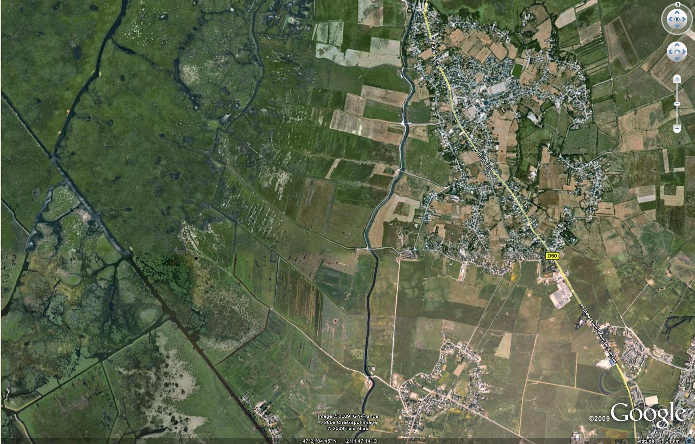

COUERON SECTION DR
Bubry ZS Restermoel 1
Bubry ZS Restermoel 2
St Malo
StM AC Rosé
StM AD la Paquelais
StM AE l'ile
StM B 1586 638 l'ile
StM B l'ile
StM ZD l'ile
StM Brais Z 157/7/8
StM Brais Z 222
StM AH - AI La Grée
StM AI La Grée
StM N La Grée Nord
StM N La Grée Nord-chaussée
StM N La Grée Sud
StM N La rue nord
StM N La rue sud
StM AK 232 La Bosse
StM Le Pin AL 18 56 65
StM Le Pin AL 231 233 245 252
StM Y 44 Le Pin-Marais
StM Y 101 Le Pin-Marais
StM N Le Pin - Bervé
StM ZA 52 53 Le Pin-Marais
StM ZB 83
StM ZB 12 14 15 Le Pin-Loncé
StM ZB 15 16 98 Le Pin-Loncé
StM Section O centrale EDF
Montoir Section ZC pre au Jau
